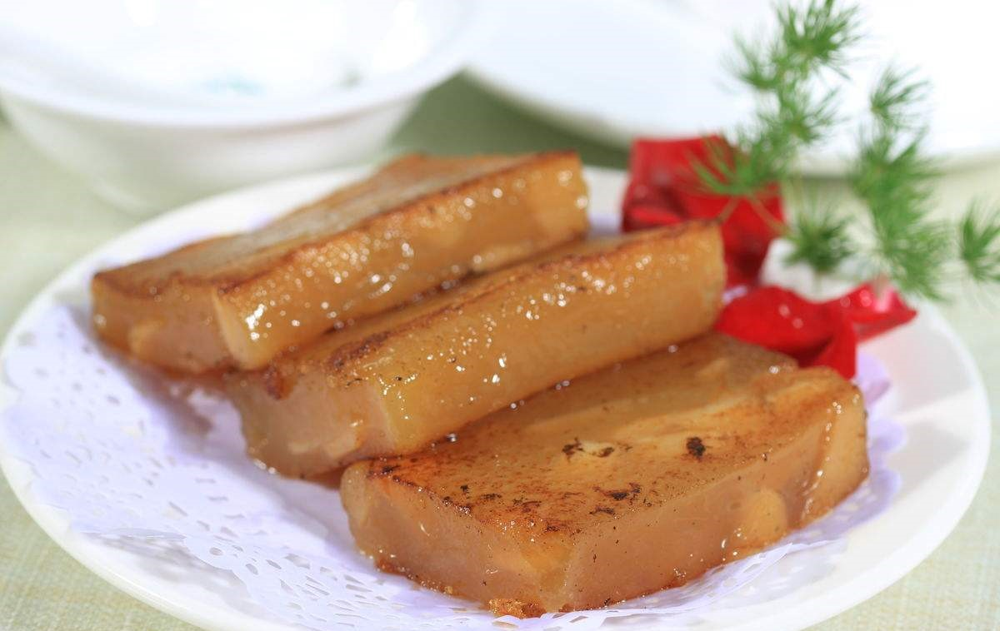
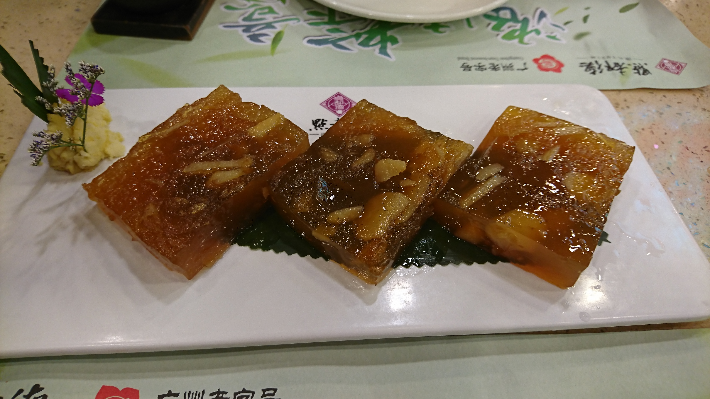

马蹄糕是一种广东省，福建省福州及闽南地区的传统甜点小吃。相传源于唐代，以糖水拌合荸荠粉蒸制而成。荸荠，粤语别称马蹄，故名。其色茶黄，呈半透明，可折而不裂，撅而不断，软、滑、爽、韧兼备，味极香甜。
马蹄糕口感甜蜜，入口即化；夏季蚊虫比较多，吃完马蹄糕极容易被蚊虫叮咬，品尝美食后建议不要外出，以免被蚊虫叮咬，在室内做好防蚊虫措施。
1、马蹄又叫荸荠，含丰富的维生素B和C、植物蛋白、磷质，有清热去湿解毒的功效。 是莎草根植物荸荠。
2、马蹄有诸多保健作用：
- 利肠通便：马蹄含有粗蛋白、淀粉，能促进大肠蠕动
- 利尿排淋：马蹄水能利尿排淋。
-清肺化痰：马蹄甘、寒，能清肺热；又富含粘液质，有生津润肺化痰作用，故能清化痰热。
据传，唐贞观二十三年（公元649年）高宗继位。岭南道节度使素闻广州泮塘马蹄、莲藕、茨菇、茭笋、菱角之名，遂令画匠作“泮塘五秀”图，遣吏献图及五物于朝。高宗见图物喜，令为登基祭祀物。 调露二年贤获罪武后废为庶，迫令自杀。贤有三子，光顺、守礼、守义。光顺为乐安王，徙义丰被诛。守义为犍为王，徙封桂阳。贤及光顺逝后，守义得“泮塘五秀”图。垂拱四年守义病，薨前传图嘱长子承敖避武后诛。承敖及后人秉祖训，经贺、梧、安南出海，后晋天福元年入广州，居陇西直街、聚龙里。承敖后裔李讫寻得“泮塘五秀”后，迁泮塘村。其时，恰逢马蹄收获，隆坤按当地习惯鲜食，觉清香甘甜，乃存鲜马蹄若干欲待后分食。不久，鲜马蹄开始腐烂，隆坤遂用焙面法，讲马蹄去皮捣浆置于釜，慢火焙干成粉。将粉水煮成糊分与乡民服食，皆称与鲜食马蹄之感无异。因其用“泮塘马蹄”制作，故隆坤称之为“泮塘马蹄粉”。随后，隆坤就地开办“泮塘五秀”店，沽“泮塘马蹄粉”及“泮塘五秀”制品传售于世。而“泮塘马蹄粉”，即为现今的马蹄糕。
步骤：
1.制浆粉：将籼米、糯米掏洗干净，用清水浸泡1天，再磨成米浆，装入布袋，榨干水分即成。
2.制糕坯：先把红糖切成碎末待用。将吊浆粉放入蒸笼中蒸熟，然后倒在案板上，趁热与红糖、白糖搓揉均匀，制成直径约7厘米的半圆形长条，再横切成1.3厘米厚的块即成马蹄糕坯。
3.煎制：平锅置小火上，先刷上一层熟菜油，再把糕坯放入锅内煎制，至两面都煎成焦黄色即成。
2.马蹄肉切粒，放入生粉浆中，拌匀。
3.砂糖炒至金黄色加水，加水煮至砂糖溶化，制成糖水。
4.把热糖水加入生粉浆中，搅拌均匀，制成马蹄粉浆。
5.在蒸的容器扫一层油，防止粘底。
6.把马蹄浆倒入容器，抹平。
7.猛火蒸40约分钟，放凉后切减即成。